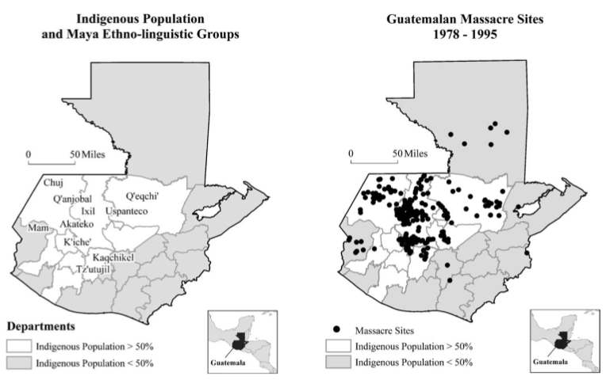

The Guatemalan Civil War engulfed the country and its peoples for more than three decades. (Take a look at the general timeline of the Civil War by clicking here.) Within this bloody era, millions of people were affected in numerous ways. People deemed as political enemies of the state were killed or "disappeared" and the indigenous Maya groups in the country were systematically attacked. The Guatemalan Army usually claimed that these Maya groups and villages were guerilla sympathizers or were actively engaged in attacking the army. While this was often untrue, the army carried out raids, village burnings, killings, forced disappearances, and numerous other atrocities against these disenfrachised groups.
The longevity of the Guatemalan Civil War resulted in hundreds of thousands of death and forced disappearances with millions of people being displaced, especially in the early 1980s when the genocidal acts against the Maya were at their most intense and active period.
Atrocities by department
The reasonings behind all the massacres, forced disappearances, and tortures are incredibly complex. However, there are clear patterns as to which areas of Guatemala were more affected by the genocide and military's scorched-earth campaign.
The indigenous Maya have a larger population in the western portion of the country compared to the east (where Ladinos are more prominent) or to the urban south. The department of Quiché was by far the hardest hit and most targeted area of Guatemala. Maya groups such as the K'iche', the Ixil, and the Q'eqchi, among others, reside in Quiché and make up a large portion of thepopulation. Nearly half of all atrocities that occurred against the Maya during the Guatemalan Civil War took place in this department.
Atrocities against certain groups
The horrors carried out by the Guatemalan army were not random and did not affect just anyone. The indigenous Maya were the most heavily targeted group during the periods of terror. The only other group that was targeted, although not nearly to the extent as the Maya, was the Ladino. These people are recognized as having their own distinct ethnicity that stems from a combination of ethnic Maya and hispanicized people. It is clear from this chart that the Maya were specifically targeted by the army and the government with the mixed-ancestry group in second, meaning that in all, 99.8% of those targeted had some kind of ties to a native group, population, or ancestral origin.
Breakdown of Maya ethnic groups
There are numerous separate Maya ethnic groups within Mesoamerica, let alone Guatemala. These languages usually act as sociocultural boundaries between groups, meaning that those who speak a K'iche' Mayan dialect most likely identify as being a K'iche' Maya.
The Guatemalan army did not just randomly kill people. Certain areas were targeted and selected for killings, tortures, and forced disappearances. Since language groups tend to have their own areas within the departments of Guatemala, this resulted in some Maya groups being disproportionately affected based on the army's "intel".
Sex and Age of known/reported victims
The Guatemalan army justified their insurgencies by indicating that they were there to combat the threat of the spread of communism which they believed was spreading among the rural poor, which was (and still is) mostly made of Maya groups. As a result, mostly men were targeted for killings, forced disappearances, and tortures as the army thought that they were the main culprits behind this communism movement that did not exist.
Men were not the only ones target though. Dozens of accounts from survivors indicate that members of the death squads would kill anyone in horrifying ways. This included not only adult men, but adult women, the elderly, adolescents, children, and infants. There are even reports of soldiers attacking pregnant women with knives and removing the fetus from the woman's womb.
Percent of violations of human rights by different groups
Not all of the terror events during the Guatemalan Civil War were conducted by the army. However, the non-military groups did not commit nearly as many crimes nor many, if any, of the crimes against humanity that were on the same level of cruelty and bloodshed as that of the army.
Massacres in Northern Quiché (1981-1983)
As can be seen in the StoryMaps and in the above charts, the Quiché region was the hardest hit area by the Guatemalan Army in terms of killings, tortures, and forced disappearances. The northern portion of Quiché was especially affected. Numerous villages were attacked (some even multiple times) and the killings were especially violent here.
The graph below shows how the average number of victims per massacre increased as power in the country changed hands from Lucas García to Efraín Ríos Montt. Montt's tenure as President of Guatemala was backed by the United States government, but was also the bloodiest period of the genocide. Although he was in office for only about one year, the majority of killings and disappearances occurred in this time.